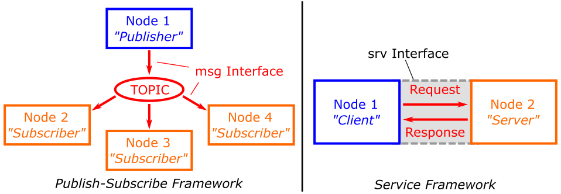
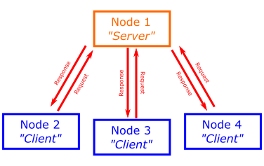
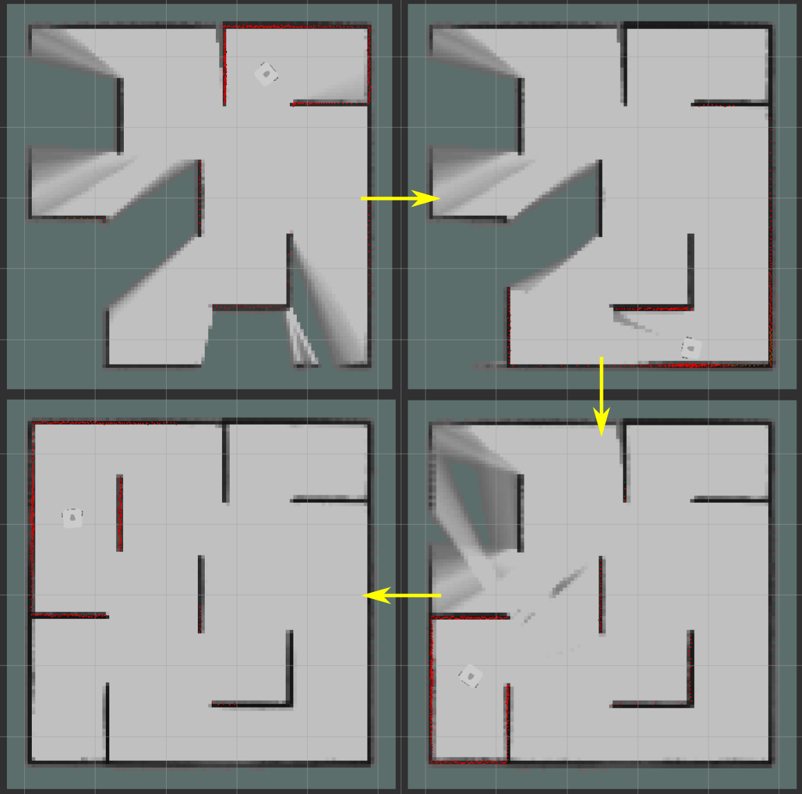
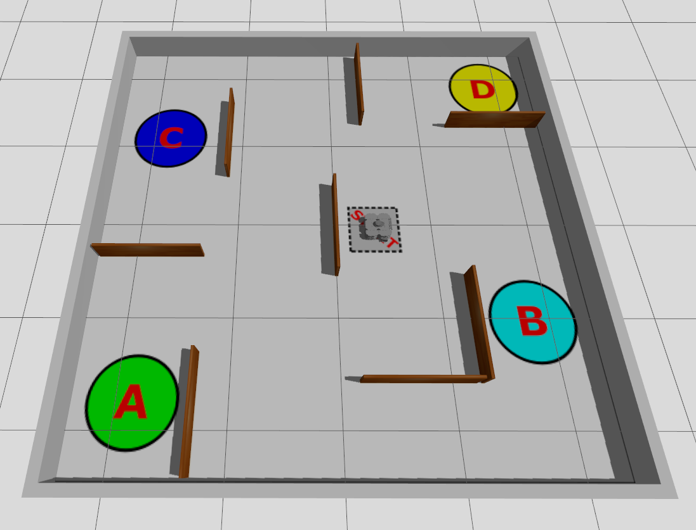
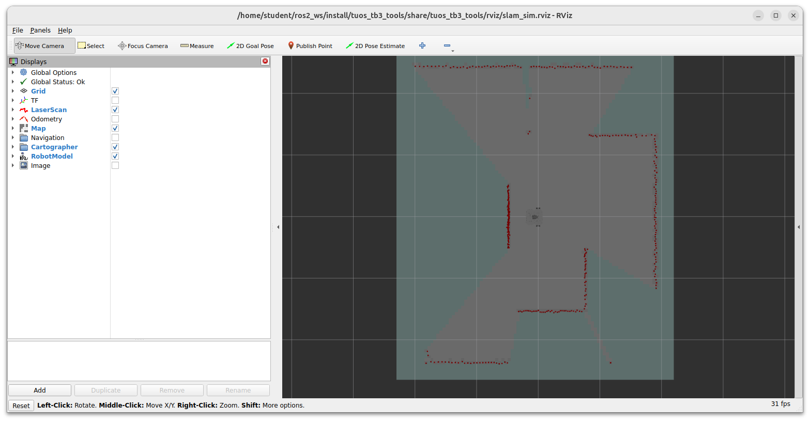

Lab 4: Services
Introduction¶
In this part you'll learn about Services: an alternative communication method that can be used to transmit data/information or invoke actions on a ROS Network. You'll learn how this works, and why it might be useful. You'll also look at some practical applications of this.
Getting Started¶
Step 1: Launch your ROS 2 Environment
You should now have access to ROS 2 via a Linux terminal instance. We'll refer to this terminal instance as TERMINAL 1.
Step 2: Launch VS Code
It's also worth launching VS Code now, so that it's ready to go for when you need it later on.
Step 3: Make Sure The Course Repo is Up-To-Date
In Lab 1 you should have downloaded and installed The Course Repo into your ROS environment. If you haven't done this yet then go back and do it now. If you have already done it, then it's worth just making sure it's all up-to-date, so run the following command in TERMINAL 1 now to do so:
Then build with Colcon:
And finally, re-source your environment:
Warning
If you have any other terminal instances open, then you'll need run source ~/.bashrc in these too, in order for any changes made by the Colcon build process to propagate through to these as well.
An Introduction to Services¶
So far, we've learnt about ROS topics and the message-type interfaces that we use to transmit data on them. We've also learnt how individual nodes can access data on a robot by simply subscribing to topics that another node on the ROS network is publishing messages to. In addition to this, we know that any node can publish messages to any topic, which broadcasts data across the ROS network, making it available to any other node on the network that may wish to access it.
Another way to pass data between ROS Nodes is by using Services. These are based on a call and response type of communication:
- A Service Client sends a Request to a Service Server.
- The Service Server processes that request and sends back a Response.

This is a bit like a transaction: one node requests something, and another node fulfils that request and responds. This is good for quick, short duration tasks, e.g.:
- Turning a device on or off.
- Grabbing some data and saving it to a file (a map for example).
- Performing a calculation and returning a result.
- Making a sound1.
A single service can have many clients, but you can only have a single Server providing that particular service at any one time.

Let's see how this all works in practice now, by playing a number game! We don't need a simulation up and running for this one, so in TERMINAL 1 use the following command to launch the Guess the Number Service:
Having launched the service successfully, you should be presented with the following:
[INFO] [#####] [number_game_service]: The '/guess_the_number' service is active.
[INFO] [#####] [number_game_service]: A secret number has been set... Game on!
We need to interrogate this now, in order to work out how to play the game...
Interrogating a Service¶
Exercise 1: Using Command-line Tools to Interrogate a Service and its Interface¶
-
Open up a new terminal instance (TERMINAL 2) and use the
ros2 servicecommand to list all active ROS services:There'll be a few items in this list, most of them with the prefix:
/number_game_service. This is the name of the node that is providing the service (i.e. the Server) and these items are all automatically generated by ROS. What we're really interested in is the service itself, which should be listed as/guess_the_number. -
Next, we need to find the interface type used by this service, which we can do a couple of ways:
-
Use the
typesub-command: -
Use the
listsub-command again, but with the-tflag:The latter will provide the same list of services as before, but each one will now have its interface type provided alongside it.
-
-
Regardless of the method that you used above, you should have discovered that the interface type used by the
/guess_the_numberservice is:Notice how (much like with message interfaces used by topics), there are three fields to this type definition:
interfaces: the name of the ROS package that this interface belongs to.srv: that this is a service interface, the second interface type we've covered now (we'll learn about the third and final one in Part 5).NumberGame: the data structure.
We need to know the data structure in order to make a call to the service, so let's identify this next.
-
We can use the
ros2 interface listcommand to list all interface types available to us on our ROS system, but this will provide us with a long list!-
We can use the
-mflag to filter for message interfaces, or the-sflag to filter for service interfaces. Try the latter: -
Still quite a lot there, right!? Let's filter this further with Grep to identify only interfaces that belong to the
interfacespackage:Hopefully, the
srv/NumberGameinterface is now listed. -
Use the
showsub-command to show the message structure:
The interface structure should be shown as follows:
-
The Format of Service Interfaces¶
Service interfaces have two parts to them, separated by three hyphens (---). Above the separator is the Service Request, and below it is the Service Response:
int32 guess <-- Request
---
int32 guesses <-- Response (1 of 3)
string hint <-- Response (2 of 3)
bool success <-- Response (3 of 3)
In order to Call a service, we need to provide data to it in the format specified in the Request section of the interface. A service Server will then send data back to the caller in the format specified in the Response section of the interface.
The interfaces/srv/NumberGame service interface has only one request parameter:
guess: aint32(32-bit integer)
...which is the only thing we need to send to the/number_game_serviceService Server in order to call it.
There are then three response parameters:
- A 32-bit integer called
guesses - A text string called
hint -
A boolean flag called
success...all of which will be returned by the server, once it has processed our request.
Exercise 2: Playing the Number Game (from the Command-line)¶
We're now ready to make a call to the service, and we can do this using the ros2 service command again (from TERMINAL 2):
-
To start, let's send an initial guess of
0and see what happens:The request will be echoed back to us, followed by a response, which will likely look something like this, and which shows us the value of the three response parameters that we identified above:
guesses: tells us how many times we've tried to guess the number in total (just once so far)hint: tells us if we should go "higher" or "lower" on our next guess in order to get closer to the secret numbersuccess: tells us if we guessed the right number or not (unlikely on the first attempt!)
-
Make another service call, this time changing the value of your
guess, e.g.: -
Try making a guess of 500 next.
The service should respond with the hint
'Error'now. Have a look back in TERMINAL 1 (where the Server is running) to get more information on this. -
Keep going until you guess the magic number, how many guesses does it take you?!
-
Stop the server, by entering Ctrl+C in TERMINAL 1.
Creating Our Own Services¶
Over the next three exercises, we'll learn how to create a service interface of our own, and build a Server and Client (in Python) that use this.
First though, we need to create a new package, so follow the same procedure as you have in the previous parts of this course to create another new package called part4_services.
In TERMINAL 1:
-
Head to the ROS 2 workspace
srcfolder: -
Clone the package template:
-
Call the
init_pkg.shscript and specify your package name:
Exercise 3: Creating a Service Interface¶
Let's create a service interface now which has a similar structure to the one used by the /guess_the_number service, but this time with two request parameters, rather than just one...
-
In TERMINAL 1, navigate into the root of your
part4_servicespackage directory: -
Create a new directory there called
srv: -
Create a new file in this directory called
MyNumberGame.srv:In here is where we will define the structure of our own
MyNumberGameservice interface. -
Open up this file in VS Code, enter the following content and save the file:
The Request will therefore have two fields now:
# Field Name Data Type 1 guessint322 cheatbool -
The rest of the process now is very similar to creating a message interface, like we did in Part 1.
First, we need to declare the interface in our
CMakeLists.txtfile, by adding the following above theament_package()line: -
Next, we need to modify the
package.xmlfile. Add the following lines to this one, just above the<export>line: -
And finally, we use Colcon to generate the necessary source code for the service interface:
-
Navigate to the root of the ROS2 Workspace:
-
Run
colcon build: -
And re-source the
.bashrc:
-
-
Let's verify that this worked, using the
ros2CLI (the same way as we did earlier when interrogatinginterfaces/srv/NumberGame):-
First, list all the ROS service interfaces that are available on the system (
-sto filter for service interface types remember!):Scroll through this list and see if you can find
part4_services/srv/MyNumberGame(or, usegrepagain). -
If it's there, use the
showsub-command to show the data structure:
Does it match with the definition in our
MyNumberGame.srvfile? -
Exercise 4: Adapting the Number Game Server¶
We're going to take a copy of the examples/number_game.py server node now, and adapt it to use the service interface that we created above.
-
In TERMINAL 1 still, navigate into the
part4_services/scriptsdirectory: -
Copy the
number_game.pyscript from the course repo into here, renaming it tomy_number_game.pyat the same time:This file should already have execute permissions, but it's always worth checking...
-
Declare this as a package executable by going back to the
CMakeLists.txtfile and addingmy_number_game.pyto your list of Python executables: -
Now, let's look at the code, and see what needs to be adapted:
-
Open up the
my_number_game.pynode in VS Code and review it. -
As it stands, the node imports the
NumberGameservice interface frominterfaces, so you'll need to change this to use the interface from your own package now:You'll also need to change the
srv_typedefinition, when the service is created in the__init__(): -
Everything that this service does (when a Request is sent to it), is contained within the
srv_callback()method.In here,
requestparameters are processed,responseparameters are defined and the overallresponseis returned once the callback tasks have been completed. -
You may have noticed that when we created our
MyNumberGameinterface in the previous exercise, the Response parameters were almost the same as those from Exercises 1 & 2, except that some of their names had been changed slightly!Work through the
srv_callback()method and make sure that allresponseattributes are renamed to match the new names that we've given them in ourpart4_services/srv/MyNumberGameinterface. -
Remember that our
MyNumberGameinterface has an additional Request parameter too:... i.e. a boolean flag with the attribute name
cheat.Adapt the
srv_callback()method further now to read this value as well.-
If (when a request is made to the server) the value of
cheatisTruethe hint that the server returns should contain the actual secret number! E.g.: -
In such situations, the value of
response.num_guessesshould still go up by one, and thecorrectflag should still returnFalse.
-
-
-
Once you've adapted the node, test it out by running it:
TERMINAL 1:
You should then be able to make calls to this from TERMINAL 2 using the
ros2 service callsub-command, as we did in Exercise 2.
Exercise 5: Creating a Python Service Client¶
So far we've been making service calls from the command-line, but we can also call services from within Python Nodes. When a node calls (i.e. requests) a service, it becomes a Service "Client".
-
Make sure your
my_number_game.pynode is still active in TERMINAL 1 for this exercise. -
In TERMINAL 2, create a new file in the
part4_services/scriptsdirectory callednumber_game_client.py(using thetouchcommand). -
Add this to your package's Python executables list in the
CMakeLists.txtfile: -
Re-build your package (as before), remembering that there are three steps to this:
- Navigate to the root of the ROS2 workspace,
- Run
colcon build(with the necessary additional arguments), - Re-source your
~/.bashrc.
-
Now, open up the
number_game_client.pyfile in VS Code, then take a look at the following:The number_game_client.pyNodeReview the above code carefully (including all the annotations), before taking a copy of it and pasting it into your own
number_game_client.pyfile. -
You should now be able to run the code with
ros2 run. To begin with, use a standardros2 runcall as follows:You should then get an output like this:
[INFO] [#####] [number_game_client]: Sending the request: - guess: 0 - cheat: False Awaiting response... [INFO] [#####] [number_game_client]: The server responded with: - Incorrect guess :( - Number of attempts so far: 1 - A hint: 'Higher'.Notice how the request parameters
guessandcheathave defaulted to0andFalserespectively? -
The main reason for using parameters in our
number_game_clientnode is so that we can actually change the value of the guess from the command-line. We can do this by adding some additional arguments to theros2 runcall:... replace
Xwith an actual number! -
Have a go at cheating now too:
-
We can also set the two parameters simultaneously using multiple
-pflags:Note
The
\above just allows us to split the command across two separate lines, handy for when these things start to get a bit long!
The Map Saver Service¶
Clearly the examples that we've been working with here so far have been fairly trivial: it's unlikely that you'll ever need to program a robot to play the number game! The aim however has been to illustrate how ROS Services work, and how to develop your own.
One application that you might find useful however is map saving. In Part 3 we learnt about SLAM, where we drove a robot around in an environment while SLAM algorithms were working in the background to generate a map of the world using data from the robot's LiDAR sensor and its odometry system:

Having mapped out the environment, we called up the map_saver_cli node from the nav2_map_server package, to save a copy of that map to a file:
... wouldn't it be nice if there was a way to be able to do this programmatically (i.e. from within a Python node, for example) rather than having to run the above command manually? Well, there is a way, and guess what? ... It involves Services!
Exercise 6: Developing A Map Saver Service Client¶
-
Make sure everything in TERMINALS 1 and 2 from the previous exercises are closed down now.
-
In TERMINAL 1, let's fire up the Nav World again, like we did in Part 3:

-
In TERMINAL 2, let's also fire up Cartographer again (the SLAM algorithms):

-
Open up another terminal instance now (TERMINAL 3), and use this one to fire up the Map Saver Service (wouldn't it be nice if we could launch all of these launch files at once?2):
This will add a number of
/map_saverservices to our ROS network. -
In yet another new terminal instance (TERMINAL 4), use a
ros2 servicesub-command to identify all the/map_saverservices (like we did in Exercise 1).Question
Do you see an item in this list that could be related to saving a map? (It has a
/map_saverprefix!3) -
Use another
ros2 servicesub-command to determine the type of interface used by this service (again, like we did in Exercise 1). -
Next, use a
ros2 interfacecommand to discover the structure of this service interface.Questions
- How many Request parameters does this interface have?
- How many Response parameters are there too?4
- What are their data types?
-
Develop a Python Service Client to make calls to this service:
-
Create a new Node in your
part4_servicespackage calledmap_saver_client.pyfor this.Things to remember when doing this:
- Create this in your
part4_services/scriptsdirectory. - Make sure it has execute permissions.
- Declare it as a package executable in your
CMakeLists.txt. - Re-build your package with
colcon, making sure you follow the full three-step process
- Create this in your
-
Use the
number_game_client.pyNode from Exercise 5 as a starting point when building your newmap_saver_client.pynode... all the same principals will apply here, you are just applying them to a different service (and therefore you need to account for a different service interface). -
Declare a parameter for your node to allow you to specify a file name for your map when the
map_saver_client.pynode is called e.g.:Follow the same approach as in Exercise 5 for this, and ensure that you specify a default value, for situations where the parameter value is not explicitly defined when the node is called.
-
When constructing service requests, consider the following tips:
- The SLAM map data (as generated by Cartographer) is published to a topic called
/map. -
When providing a name for the map file:
- You don't need to include a file extension
-
File names are interpreted relative to your home directory, so:
my_amazing_mapwould result in a map file at~/my_amazing_map.yamlmy/amazing/mapwould result in a map file at~/my/amazing/map.yaml(assuming the directory structure already exists!)
-
For further guidance see here for a usage example.
- The server will apply its own defaults to certain request attributes, if they aren't defined explicitly by a client.
- The SLAM map data (as generated by Cartographer) is published to a topic called
-
Submission on Google Classroom¶
To complete Lab 4, you must finish the final challenge and upload your package.
Final Challenge: The Service Server Node¶
Using the ROS Service concepts you've learned, implement the final service challenge discussed earlier in the lab.
- The Goal: Create a new node (e.g.,
movement_server.py) that acts as a Service Server to command the robot to move based on a custom request. - The Logic:
- Set up the server to use the appropriate Service Interface.
- Handle incoming requests to trigger a specific sequence of movements (e.g., moving forward a set distance or turning a specific angle).
- Return a standard response once the movement sequence has successfully completed.
Preparation for Upload¶
Ensure your part4_services package is correctly compiled, free of build errors, and all Python scripts have executable permissions.
- Clean your workspace:
- Compress your package:
Submission Checklist¶
Your part4_submission.zip must contain:
scripts/:number_game_client.py(From the earlier exercise).movement_server.py(The Final Challenge).
package.xml: Must include all necessary dependencies (e.g.,rclpy,interfaces,geometry_msgs).CMakeLists.txt: Correctly configured with all Python scripts listed under theinstall(PROGRAMS ...)block.
Upload your part4_submission.zip to the "Lab 4: Services" assignment on Google Classroom.
-
On the real Waffles, there's a service called
/sound. Have a look at this next time you're in the lab... Once you've worked through the whole of Part 4 you'll know exactly how to interrogate this service and leverage the functionality that it provides! ↩ -
You can! We can use launch files to launch other launch files, see here for more info. ↩
-
There should be one in the list called
/map_saver/save_map↩ -
The
nav2_msgs/srv/SaveMapService Interface has 6 Requests (map_topic,map_url,image_format,map_mode,free_thresh,occupied_thresh) and 1 Response (result). ↩